배관기능장 (2003-07-02 기출문제)
1과목: 임의구분
1. 주철관의 소켓이음에 대한 설명으로 틀린 것은?
- 납은 얀의 이탈을 방지한다.
- 납은 접합부의 굽힘성을 부여하여 준다.
- 얀은 납과 물이 접촉하는 것을 방지한다.
- 얀은 수도관일 경우 2/3정도 채워 누수를 막아준다.
(정답률: 74%)

2. 점 용접의 3 대 요소가 아닌 것은?
- 통전 시간
- 가압력
- 용접 전류
- 도전율
(정답률: 77%)
3. 제조 공장에서 정제된 가스를 저장하여 가스의 품질을 균일하게 유지하며 제조량과 수요량을 조절하는 저장탱크를 무엇이라 하는가?
- 정제기
- 가스 홀더
- 정압기
- 스토우브
(정답률: 81%)
4. 가스배관의 보수 또는 연장 작업시 배관 내에서 가스를 차단할 경우 다음 중 가장 적합한 것은?
- 모래
- 가스 팩(Gas pack)
- 코르크(Cork)
- 슈링크 튜브(Shrink tube)
(정답률: 80%)
5. 보온, 방로, 도장 작업시 주의 사항으로 틀린 것은?
- 아스팔트 용해로 밑에는 내화벽돌이나,모래를 깐다.
- 화력 조절이 즉시 되지 않은 연료는 사용하지 않는다.
- 용해된 아스팔트를 운반할 때는 장갑을 끼고 보행에 주의한다.
- 밀폐된 용기 내의 도장 작업시는 자연 통풍만을 해야한다.
(정답률: 92%)
6. 표준화의 CAD에 적용시 자동화에 적합한 설계기술 업무와 도면작성에 관한 분야 중 설계기술 업무 분야인 것은?
- 정밀한 도형, 유사한 도형이 반복되는 분야
- 설계이론이 정식화되어 있어 계산이 복잡한 분야
- 단순한 도형의 배열이나 원, 곡선 등이 많은 분야
- 도면작성이 숙련된 전문기능에 의해 작성되는 분야
(정답률: 69%)
7. 폴리에틸렌 관의 이음 방법 중 슬리브 너트와 캡 너트가 사용되는 것은?
- 용착 슬리브 이음
- 테이퍼 조인트 이음
- 인서트 조인트 이음
- 기볼트 조인트 이음
(정답률: 34%)
8. 물탱크의 자유표면에서 깊이가 25m인 지점에 있는 밸브의 게이지 압력은 몇 kgf/cm2 인가?
- 0.25
- 2.5
- 25
- 250
(정답률: 63%)
9. 아크절단에 압축 공기를 병용한 방법으로 용접 현장에서 용접 결함부의 제거, 용접 홈의 준비 등에 이용되는 아크 절단은?
- 탄소 아크 절단
- 금속 아크 절단
- 플라즈마 아크 절단
- 아크 에어 가우징
(정답률: 77%)
10. 광물성 섬유류로 미세하고 강인하며 450℃까지의 고온에 견디는 패킹은?
- 석면
- 네오프론
- 테프론
- 모넬 메탈
(정답률: 68%)
11. 주철관 이음시 스텐레스 커플링과 고무링 만으로 쉽게 이음할 수 있는 접합법은?
- 노허브 이음(no-hub-joint)
- 빅토릭 이음(victoric joint)
- 타이톤 이음(tyton joint)
- 기볼트 이음(gibault joint)
(정답률: 88%)
12. 배관계의 축방향 이동을 안내하는 역활을 하며 축과 직각 방향의 이동을 구속하는데 사용하며 파이프 랙 위의 배관의 곡관부분과 신축 이음쇠부분에 설치하는 것은?
- 가이드(Guide)
- 로울러 서포트(Roller support)
- 리지드 서포트(Rigid support)
- 파이프 슈우(Pipe shoe)
(정답률: 72%)
13. 다음 배수 트랩 중 박스트랩이 아닌 것은?
- 벨 트랩
- 드럼 트랩
- 메인 트랩
- 그리스 트랩
(정답률: 46%)
14. 제1각법과 제3각 법에서 눈과 물체의 위치 설명 중 옳은 것은?
- 제1각법 : 눈 → 물체 → 투상면
- 제1각법 : 눈 → 투상면 → 물체
- 제3각법 : 눈 → 물체 → 투상면
- 제3각법 : 투상면 → 눈 → 물체
(정답률: 68%)
15. 배관 용접부의 비파괴 시험 검사법이 아닌 것은?
- 외관 검사
- 초음파 탐상법
- 인장 시험
- X 선 투과 시험법
(정답률: 83%)
16. 다음 중 기송배관의 분류방식이 아닌 것은?
- 진공식(vacuum type)
- 압송식(pressure type)
- 실린더식(cylinder type)
- 진공 압송식(vacuum and pressure type)
(정답률: 88%)
17. 급탕법 중 보일러에서 나온 증기를 물탱크 속에 불어넣어 물을 가열하는 일명 스팀 사이렌스 방식은?
- 기수 혼합식
- 보일러 간접 가열식
- 가스 직접식
- 석탄 가열 증기 분무식
(정답률: 80%)
18. 그림은 급수펌프가 설치된 배관도에서 주위부품이 생략되어 있다. 펌프를 2 대 병렬 배관한 것 중 1 조를 별도로 표기한 것으로 필요한 부품에서 번호로 만 표기된 ① → ② → ③ → ④의 명칭을 순서대로 가장 적합하게 구성된 것은?
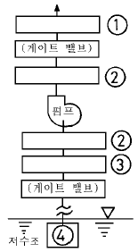
- 플렉시블 조인트 → 첵밸브 → 푸트 밸브 → 스트레이너
- 첵밸브 → 플렉시블 조인트 → 푸트 밸브 → 스트레이너
- 플렉시블 조인트 → 첵밸브 → 스트레이너 → 푸트 밸브
- 첵밸브 → 플렉시블 조인트 → 스트레이너 → 푸트밸브
(정답률: 60%)
19. 관 속을 흐르는 물을 갑자기 정지시키거나 용기에 차 있는 물을 갑자기 흐르게 하면 관로에 수격 작용이 생기므로 이를 방지하기 위해 공기실을 설치해야 한다. 다음 중에서 공기실 설치 위치로 가장 적합한 것은?
- 펌프의 흡입구
- 급속 개폐식 수전 가까운 곳
- 펌프의 출구
- 급속 개폐식 수전에서 먼 곳
(정답률: 69%)
20. CNC 파이프 밴딩 머신으로 그림과 같이 관을 굽히고자 한다. 프로그램을 작성하는데 ①점의 X, Y 좌표가 (0,0)일 때 ⑤점의 절대좌표는?
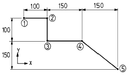
- (250, 300)
- (300, -250)
- (400, -250)
- (400, 250)
(정답률: 84%)
2과목: 임의구분
21. 고온측 고체물질 분자의 활발한 움직임에 의하여 인접한 저온측의 분자로 열이 이동하는 것을 의미하는 용어는?
- 복사
- 대류
- 전도
- 방사
(정답률: 87%)
22. 파이프속을 흐르는 유체가 기름임을 표시하는 기호는?
- - W -
- - G -
- - O -
- - A -
(정답률: 93%)
23. 일반적인 염화 비닐관의 냉간 이음방식이 아닌 것은?
- TS식
- 편수칼라식
- PC식
- H식
(정답률: 55%)
24. 펌프의 종류 중 고양정, 대유량용으로 유체를 이송시키는데 가장 적당한 펌프는?
- 왕복식 펌프
- 원심 펌프
- 로터리 펌프
- 축류 펌프
(정답률: 82%)
25. 다음의 데이터를 보고 편차 제곱합(S)을 구하면? (단, 소숫점 3자리까지 구하시오.)
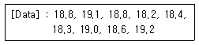
- 0.338
- 1.029
- 0.114
- 1.014
(정답률: 65%)
26. 수압시험의 방법으로 물을 채우기 전의 준비와 주의사항에 대한 설명이다. 틀린 것은?
- 물을 채우는 중, 테스트 중임을 표시하는 표를 밸브등에 부착한다.
- 안전밸브, 신축죠인트에 수압이 걸리도록 처치한다.
- 급수밸브, 배기밸브를 필요한 개소에 장치한다.
- 테스트 펌프, 압력계(테스트압의 1.5배 이상)의 점검을 한다.
(정답률: 82%)
27. 그림에서 A점인 a1의 단면적이 2m2 일 때, 평균 유속이 1m/sec 이면, 단면적이 b2 = 0.4m2 인 B점의 평균유속은 약 몇 m/sec 인가?
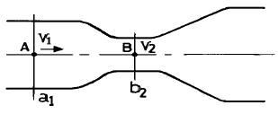
- 1
- 2
- 4
- 5
(정답률: 51%)
28. 보기 배관도에서 ①∼③의 명칭이 옳게 나열된 것은?
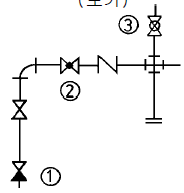
- ① 체크밸브, ② 글로브 밸브, ③ 콕 일반
- ① 체크밸브, ② 글로브 밸브, ③ 볼 밸브
- ① 앵글밸브, ② 슬루스 밸브, ③ 콕 일반
- ① 앵글밸브, ② 슬루스 밸브, ③ 볼 밸브
(정답률: 79%)
29. 공정 도시기호중 공정계열의 일부를 생략할 경우에 사용되는 보조 도시기호는?
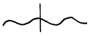
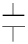
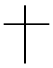
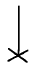
(정답률: 65%)
30. 예방보전의 기능에 해당하지 않는 것은?
- 취급되어야 할 대상설비의 결정
- 정비작업에서 점검시기의 결정
- 대상설비 점검개소의 결정
- 대상설비의 외주이용도 결정
(정답률: 89%)
31. 강관의 종류와 KS 규격 기호를 짝지은 것 중 옳은 것은?
- SPP : 수도용 도복장 강관
- SPPS : 압력 배관용 탄소 강관
- STPW : 배관용 스테인레스 강관
- SPPH : 보일러 열 교환기용 탄소 강관
(정답률: 83%)
32. 다음 중 평면도에 악취방지장치 및 콕이 붙은 배수구을 표시하는 기호로 가장 적합한 것은?
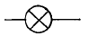
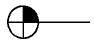
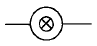
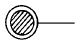
(정답률: 82%)
33. 가스 절단에서 예열 불꽃이 약할 때의 영향으로 다음 중 가장 중요한 것은?
- 절단면이 거칠어진다.
- 변두리가 용융되어 둥글게 된다.
- 슬래그 중 철 성분의 박리가 어려워진다.
- 드래그가 증가하고 역화를 일으키기 쉽다.
(정답률: 76%)
34. 다음 중 내약품성, 내유성이 우수하여 금속의 방식도료로 우수하나 부착력과 내후성이 나쁘며, 내열성이 약한 것이 결점인 합성수지 도료는?
- 에칠렌계
- 요소 멜라민
- 프탈산
- 염화 비닐계
(정답률: 57%)
35. 보기와 같은 배관의 간략 도시방법의 의미로 가장 적합한 것은?
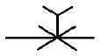
- 팽창 이음쇠
- 고정식 지지 장치
- 수동 조작식 체크밸브
- 수동 조작식 배관설비 청소구
(정답률: 85%)
36. 맞대기 용접식 강관이음쇠 중 일반 배관용 이음쇠의 바깥지름, 안지름 및 두께는 다음 중 어떤 관의 치수와 동일한가?
- 배관용 탄소강관
- 압력배관용 탄소강관
- 고압배관용 탄소강관
- 저온배관용 탄소강관
(정답률: 75%)
37. 링크형 파이프 커터의 사용 용도로 가장 적합한 것은?
- 주철관 절단용
- 강관 절단용
- 비금속관 절단용
- 도관 절단용
(정답률: 89%)
38. 배관 시공시의 일반적인 유의사항으로 잘못된 것은?
- 배관은 가급적 그룹화되게 한다.
- 배관은 가급적 최단거리로 하고 굴곡은 적게 한다.
- 고온, 고압라인인 경우에는 기기와의 접속용 플랜지 이외에는 가급적 플랜지 접합을 피한다.
- 유속이 빠른 배관에는 분기관과 굴곡부 곡율 반경을 최소가 되게 한다.
(정답률: 57%)
39. 밸브 내부는 버퍼(buffer)와 스프링(spring)으로 구성되어 있고 바이패스 밸브 기능도 하는 체크밸브는?
- 리프트형(lift type) 체크밸브
- 스윙형(swing type) 체크밸브
- 푸트형(foot type) 체크밸브
- 해머리스형(hammerless type) 체크밸브
(정답률: 81%)
40. 파이프(기계) 바이스 호칭치수 1⑤, 호칭 번호 #2에서의 사용범위로 가장 적합한 파이프의 호칭 치수 범위는?
- 6A ∼ 50A
- 6A ∼ 65A
- 6A ∼ 90A
- 6A ∼ 115A
(정답률: 52%)
3과목: 임의구분
41. 합성수지관 접합용 공구가 아닌 것은?
- 드레셔
- 열풍 용접기
- 가열기
- 비닐용 파이프 커터
(정답률: 69%)
42. 보일러의 과열로 인한 파열의 원인이 아닌 것은?
- 화염이 국부적으로 집중 연소될 경우
- 보일러수에 유지분이 함유되어 있는 경우
- 스케일 부착으로 열 전도율이 저하될 경우
- 물 순환이 양호하여 증기의 온도가 상승될 경우
(정답률: 87%)
43. 설비 배관 도면에서 전체도 또는 옥외 배관도라고도 하며 건축물과 부지 및 도로 등의 관계, 상.하수도와 가스배관의 위치를 표시하는 도면의 명칭으로 가장 적합한 것은?
- 배치도
- 계통도
- 입체도
- 평면도
(정답률: 61%)
44. 압축공기 배관에서 공기 탱크를 설치하는 목적과 가장 관계가 적은 것은?
- 맥동 완화
- 압축공기의 저장
- 드레인 분리
- 공기 냉각
(정답률: 74%)
45. 다음 가스 공급시설에서 공급가스가 항상 소요 공급 압력이 되도록 조정하는 것은?
- 가스 홀더
- 정압기
- 집진 장치
- 공급관
(정답률: 70%)
46. 관리한계선을 구하는데 이항분포를 이용하여 관리선을 구하는 관리도는?
- Pn 관리도
- U 관리도
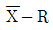
관리도- X 관리도
(정답률: 41%)
47. 경질 염화 비닐관의 특징을 설명한 것으로 틀린 것은?
- 열 팽창률이 크다.
- 전기 절연성이 작다.
- 열의 불양도체이다.
- 내산, 내알칼리성이다.
(정답률: 54%)
48. 용접부 비파괴시험 기호가 RT로 표기되어 있으면 다음 중 어느 시험인가?
- 초음파시험
- 육안검사
- 내압시험
- 방사선투과시험
(정답률: 84%)
49. 교류아크 용접기로 용접시 6분 동안 용접을 하고 4분간은 휴식을 하였다. 이때 용접기의 사용률은 몇 % 인가?
- 50
- 60
- 67
- 40
(정답률: 83%)
50. 90°곡관을 3편 마이터(3 pieces miter)로 만들려고 할 때 1편의 절단각 θ는 몇 도인가?
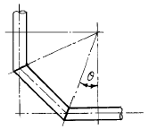
- 45°
- 30°
- 22.5°
- 15°
(정답률: 64%)
51. 일반적인 수도용 주철관의 종류가 아닌 것은?
- 수도용 수직형 주철직관
- 수도용 원심력 사형직관
- 수도용 원심력 금형직관
- 수도용 인발형 주철직관
(정답률: 63%)
52. 어떤 측정법으로 동일 시료를 무한 횟수 측정하였을 때 데이터의 분포의 평균치와 참값과의 차를 무엇이라 하는가?
- 신뢰성
- 정확성
- 정밀도
- 오차
(정답률: 67%)
53. 일반적인 수도용 주철관 보통압관의 최대 사용 정수두 압력은 몇 kgf/cm2 인가?
- 5
- 7.5
- 9
- 12
(정답률: 74%)
54. 15℃의 물 400㎏에 85℃의 온수 몇 ㎏을 혼합하면 50℃의 온수를 얻을수 있는가?
- 450㎏
- 400㎏
- 250㎏
- 200㎏
(정답률: 53%)
55. 배관 도면을 작성할 때 그 지방의 해수면에 기준선(base line)을 설정하여 이 기준선으로부터의 높이를 표시하는 표시법을 무엇이라고 하는가?
- GL(ground line) 표시법
- FL(floor line) 표시법
- EL(elevation) 표시법
- CL(center line) 표시법
(정답률: 71%)
56. 자동화 시스템에서 공정처리 상태에 대한 정보를 만들고, 수집하며 이정보를 프로세서에 전달하는 제어부분인 자동화의 5대 요소 중 하나인 것은?
- 센서(sensor)
- 네트워크(network)
- 액츄에이터(actuator)
- 소프트웨어(software)
(정답률: 59%)
57. 그림과 같은 파이프 랙(pipe rack)이 있다. 연료유 라인, 연료가스 라인, 보일러 급수라인 등의 유틸리티(utility) 배관은 어디에 배열하는 것이 적합한가?
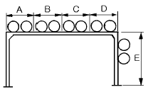
- A부분 및 D부분
- B부분 및 C부분
- C부분 및 D부분
- D부분 및 E부분
(정답률: 91%)
58. 다음 배관용 연결 부속 중에서 분해 조립이 가능하도록 할 때 쓰이는 것으로 되어있은 항은?
- 엘보, 티
- 레듀셔, 부싱
- 캡, 플러그
- 유니온, 플렌지
(정답률: 84%)
59. 로트(Lot)수를 가장 올바르게 정의한 것은?
- 1회 생산수량을 의미한다.
- 일정한 제조회수를 표시하는 개념이다.
- 생산목표량을 기계대수로 나눈 것이다.
- 생산목표량을 공정수로 나눈 것이다.
(정답률: 50%)
60. 다음 용접의 종류 중 가스용접에 속하지 않는 것은?
- 산소 아세틸렌 용접
- 공기 아세틸렌 용접
- 산소 수소 용접
- CO2(탄산가스) 아크 용접
(정답률: 65%)